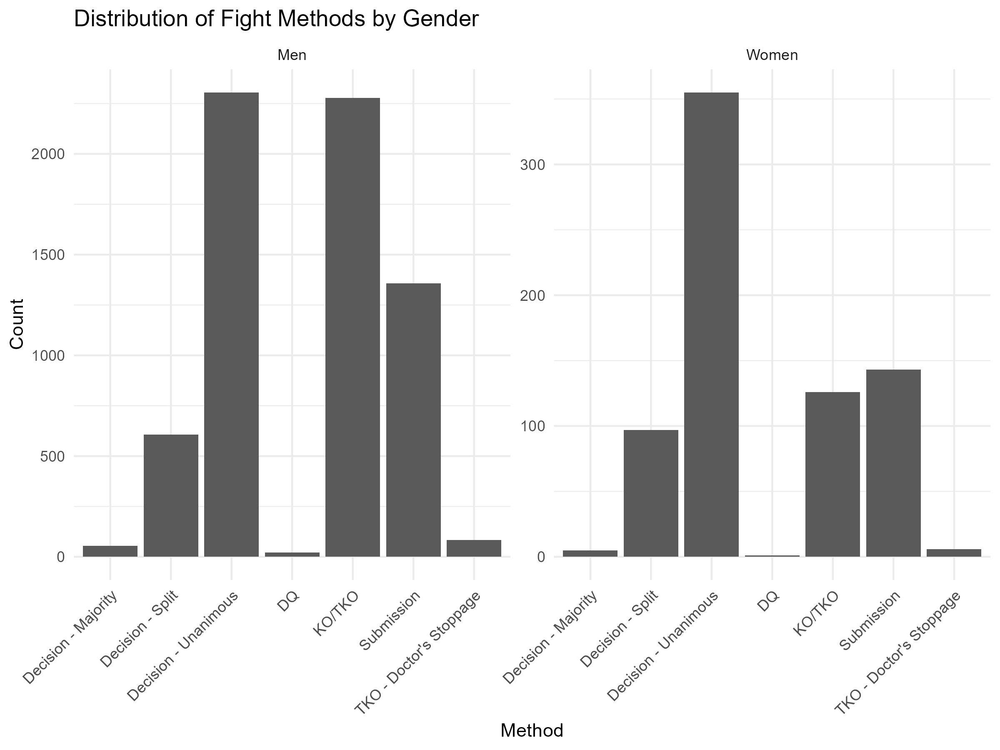
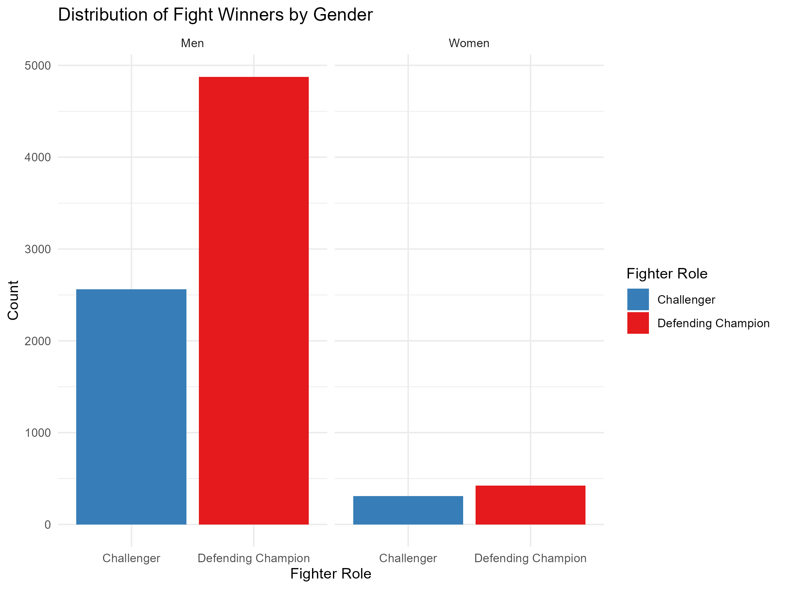
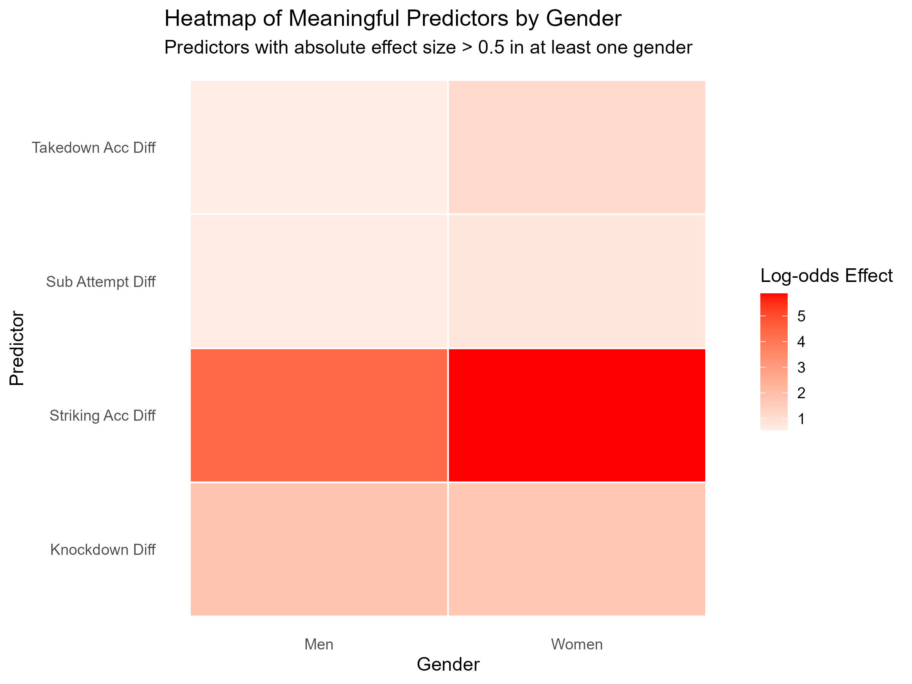
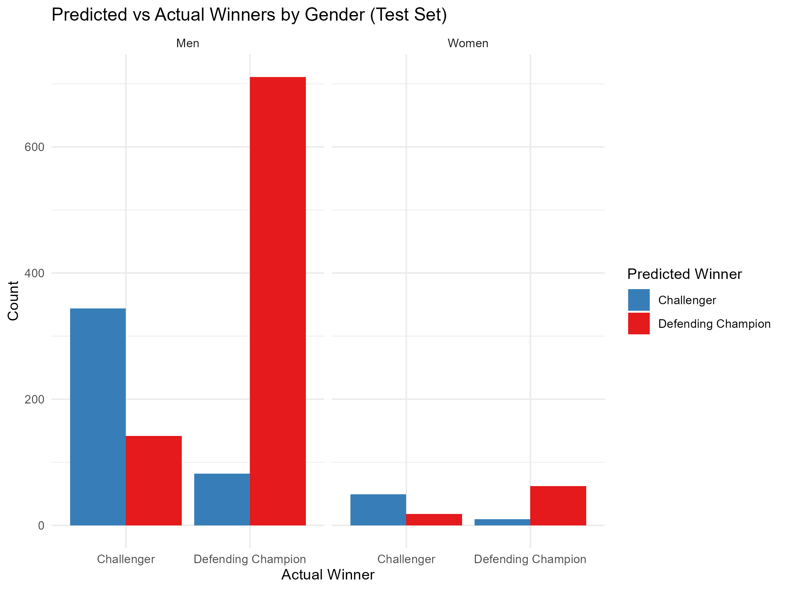
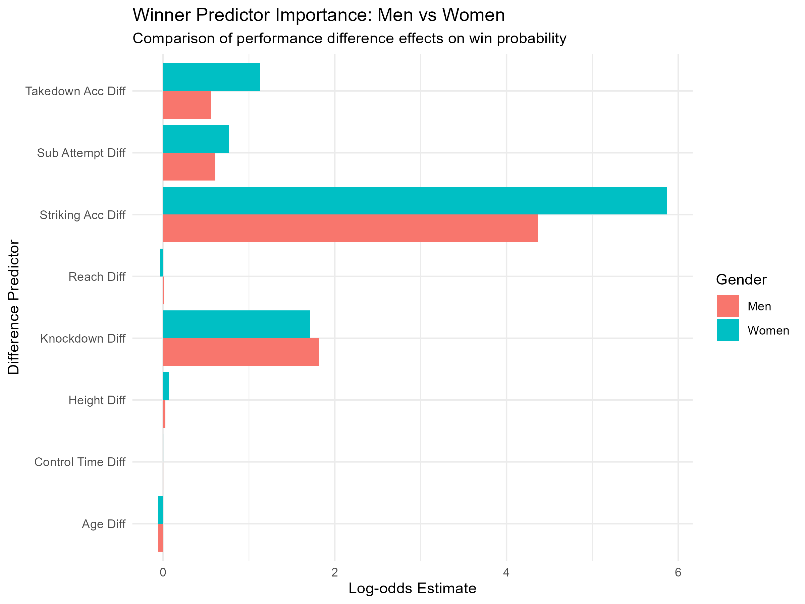
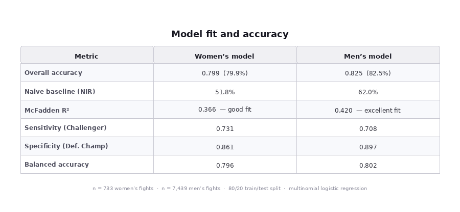
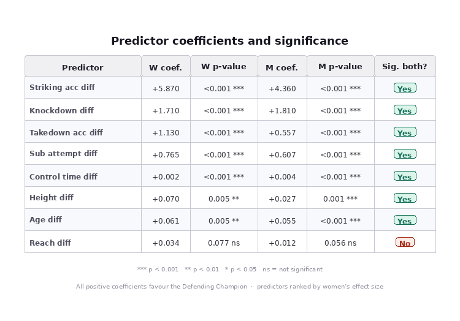
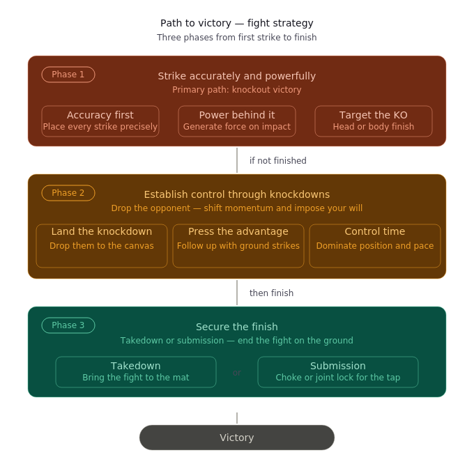

The United Fighting Championship (UFC) is a competitive mixed martial arts organization capable of generating up to 1.4 billion USD alone in 2024. To maintain this high amount of global revenue, addressing issues with nurturing new talent across different weight classes for future fights and concerns about boxer pay percentage for televised fights is paramount to the continued success of UFC. Tabling these issues could lead to a drastic decline in revenue and stall the future progression of this globally popular combat sport.
To this point, this project seeks to analyze fighter performance data across (male and female) boxers that could provide solid metrics that coaches and prospective boxers can use for: (i) scouting, (ii) performance match-ups, (iii) and metrics that can be used for further analysis. The data for this project was obtained and scrubbed from the UFC Stats Website and compiled on Kaggle; with fights in recent history being cataloged (1996 to 2024).
Even though the dataset is quite robust, differences between each individual fighters were used. As such, the following independent variables were chosen for intial analysis:
| Difference Variable | Description |
|---|---|
| Difference Amount of Knockdowns | Difference in amount of times a boxer is knocked onto ring canvas, hangs on the ropes to prevent his/her fall, or any part of the body other than the soles of the feet touches the ring canvas |
| Difference in Striking Accuracy % | Difference in Total % of strikes that connect to opponent boxer |
| Difference in Takedown Accuracy | Difference in total % of successful takedowns (to the ground) over total takedown attempts |
| Difference in Submission Attempts | Difference in number of attempts when fighter applies a hold to force an opponent to “tap out” |
| Difference in Control Time | Difference in amount of time spent in dominant cinch or ground positions |
| Difference in Height | Difference in overall height of boxer |
| Difference in Arm Reach | Difference in measured arm length of boxer |
| Difference in Age | Difference in age Difference between fighters |
Given that there are multiple ways to win in a UFC fight, the win conditions (dependent variables) in this dataset were coded as follows:
| Outcome Type | Description |
|---|---|
| KO/TKO | Knockout / Technical Knock-Out |
| TKO – Doctor’s Stoppage | Doctor ruling of TKO |
| Decision – Split | Split decision from judges |
| Decision – Majority | Majority ruling from judges |
| Decision – Unanimous | Judge consensus of match win |
| Submission | Successful “tap-out” of opponent |
| DQ | Disqualification |
Using the sequential steps of the SEMMA (Sampling, Exploring, Modify, Model, Assess) analysis, a multinomial logistic regression was developed for use with this data. All data processing was done within R using the following libraries: dplyr, readr, ggplot2, nnet, broom, reshape2, GGally, and caret.
After loading the UFC dataset, the overall document was accepted as a 7439 x 95 Matrix (n = 7439 observations). Between male and female UFC fighter data, this was resulted for into xxx fights for men and 733 fights for women. Pilot data analysis was originally completed for exploratory data analysis in female UFC fighters. The results of each method were graphed via histogram to showcase the spread of each win condition.
Distribution Plots of Win Condition (Men & Women)


After visualizing the distribution, we can notate the lower instances of the special “Win Conditions” of Doctor’s Stoppage, Disqualification, Majority Win, or Majority Splits. We kept these variables for now to examine if they could be accurately predicted in our model before deciding what to do with these variables. The specified chosen variables above were selected as this dataset had variables and differences between the winning and losing boxers and these variables were separated to produce new datasets for our men and women fighters.
(
kd_diff = "Knockdown Diff",
str_acc_diff = "Striking Acc Diff",
sub_att_diff = "Sub Attempt Diff",
td_acc_diff = "Takedown Acc Diff",
ctrl_sec_diff = "Control Time Diff",
height_diff = "Height Diff",
reach_diff = "Reach Diff",
age_diff = "Age Diff",
),
direction = ifelse(estimate > 0,
"Positive (Defending Champion advantage)",
"Negative (Challenger advantage)")The above code showcases how the above predictors were determined from the UFC dataset shared above.
SAMPLING
The seed function was used and set to 123 and 213 for replicability when deciding to plot the datasets for training and test validation. An 80/20 training split was utilized creating a result of 586 training matches and 147 validation matches for women and XXX training matches and XXX validation matches for men.
# Women
set.seed(123)
n <- nrow(women_diff_data)
train_idx <- sample(1:n, size = 0.8 * n)
train_w <- women_diff_data[train_idx, ]
test_w <- women_diff_data[-train_idx, ]
# Men
set.seed(213)
n_men <- nrow(men_diff_data)
train_idx_m <- sample(1:n_men, size = 0.8 * n_men)
train_m <- men_diff_data[train_idx_m, ]
test_m <- men_diff_data[-train_idx_m, ]EXPLORING
A covariance matrix was made to visualize and confirm dataset relationships by using the GGally:: ggpairs() command. These results are displayed and showcase covariance between our specified variables. There seemed to be some promise with the predictive power of these variables and also showcased some of our other independent variables sharing significant correlations with each other.
MODIFY
For ease of data visualization, the win conditions were consolidated for visualizations. Given the robustness of data and specification of variables, there was no further need for modification to the data.
MODEL
A multinomial regression command (nnet: multinom) was used with this data to assess the predictive power of these variables with this model. Deviance and AIC was also assessed for these variables (Figure 3). These values were then taken to calculate their respective z-scores and p-values, to identify which of these variables were significant predictors (Figure 3). These were put into a correlational heatmap to be able to visualize which variables are the most important across the different methods of winning.
This is just a test to visualize the heatmap models.

This heatmap visualizes the log-odds effect size of four key performance metrics — Striking Accuracy Difference, Knockdown Difference, Takedown Accuracy Difference, and Submission Attempt Difference — broken down by gender. Color intensity reflects predictive strength, with deeper red indicating a stronger influence on fight outcomes. Striking Accuracy stands out as the dominant predictor for both men and women, though its effect is notably more pronounced in women’s fights (log-odds: 5.87) compared to men’s (4.36). Takedown Accuracy and Submission Attempts show moderate effects that are also stronger among women fighters, suggesting that grappling-based tactics carry greater predictive weight in women’s competition.
Prediction Model Classification Variables & Plots (Men & Women)

This grouped bar chart compares model-predicted winners against actual fight outcomes for both men’s and women’s divisions. The logistic regression model achieved an overall accuracy of 82.5% for men’s fights and 79.9% for women’s fights — both well above their respective baseline rates of 62% and 51.8%. The charts show that the model reliably identifies Defending Champions as winners, reflecting the strong historical advantage held by experienced fighters. Misclassifications are most common when Challengers win, highlighting the inherent unpredictability of upset victories in UFC competition.
winner_model_w <- multinom(
winner ~ kd_diff + str_acc_diff + sub_att_diff +
td_acc_diff + ctrl_sec_diff + height_diff +
reach_diff + age_diff,
data = train_w
)
coef_mat <- summary(winner_model_w)$coefficients
se_mat <- summary(winner_model_w)$standard.errors
z_values <- coef_mat / se_mat
p_values <- 2 * (1 - pnorm(abs(z_values)))winner_model_m <- multinom(
winner ~ kd_diff + str_acc_diff + sub_att_diff +
td_acc_diff + ctrl_sec_diff + height_diff +
reach_diff + age_diff,
data = train_m
)
coef_mat_m <- summary(winner_model_m)$coefficients
se_mat_m <- summary(winner_model_m)$standard.errors
z_values_m <- coef_mat_m / se_mat_m
p_values_m <- 2 * (1 - pnorm(abs(z_values_m)))
This horizontal bar chart displays the log-odds coefficients for each performance predictor, split by men (salmon) and women (teal). Striking Accuracy Difference is the clear top predictor across both genders, followed by Knockdown Difference and Takedown Accuracy. Notably, physical attributes such as height, reach, and age contribute only minimally to predicting outcomes, reinforcing that in-fight execution matters far more than physical measurables. The chart also highlights meaningful gender differences: women’s fight outcomes are more strongly tied to striking precision and grappling accuracy, while men’s predictors are more evenly distributed across striking and knockdown metrics.
ASSESS
pred_test_w <- predict(winner_model_w, newdata = test_w, type = "class")
cm_w <- confusionMatrix(data = pred_test_w, reference = test_w$winner)
null_model_w <- multinom(winner ~ 1, data = train_w, trace = FALSE)
McFadden_R2_w <- 1 - (as.numeric(logLik(winner_model_w)) / as.numeric(logLik(null_model_w)))pred_test_m <- predict(winner_model_m, newdata = test_m, type = "class")
cm_m <- confusionMatrix(data = pred_test_m, reference = test_m$winner)
null_model_m <- multinom(winner ~ 1, data = train_m, trace = FALSE)
McFadden_R2_m <- 1 - (as.numeric(logLik(winner_model_m)) / as.numeric(logLik(null_model_m)))


Two multinomial logistic regression models were evaluated on held-out test data (80/20 split) for women’s (n = 733) and men’s fights (n = 7,439). Both models substantially outperformed their naive baselines — women’s accuracy of 79.9% vs a baseline of 51.8%, and men’s 82.5% vs 62.0%. McFadden R² values of 0.366 (women) and 0.420 (men) indicate good to excellent fit, confirming the predictors collectively explain fight outcomes well beyond chance. Balanced accuracy was consistent across both models (0.796 women, 0.802 men). Specificity exceeded sensitivity in both cases, meaning Defending Champion wins were predicted more reliably than Challenger wins — likely reflecting the natural class imbalance in the data. Seven of eight predictors were significant (p < 0.05) in both models. Reach difference was the only non-significant predictor across both genders. All significant predictors carried positive coefficients, consistently favouring the Defending Champion. Striking accuracy was the dominant predictor in both models but stronger for women (5.870 vs 4.360). Knockdown difference was near-identical across genders (1.710 vs 1.810). Takedown accuracy was twice as predictive in women’s fights (1.130 vs 0.557), suggesting grappling transitions are a more decisive finishing route for women.
The three-phase framework above is not just a coaching philosophy — it is directly supported by data. Using a multinomial logistic regression model trained on over 8,000 UFC bouts, we identified which in-fight performance differences most reliably predict the winner. The model tables below report the strength and significance of each predictor across both men’s and women’s fights. Striking accuracy emerged as the single most powerful signal (log-odds: +5.87 for women, +4.36 for men), followed by knockdowns and takedown accuracy — mapping precisely onto Phases 1, 2, and 3 of the strategy. Both models exceeded 79% accuracy on held-out test data, substantially outperforming the naive baseline, suggesting the framework reflects genuine patterns in how UFC fights are won.
In our pilot analysis for this project, the goal was to identify key predictors across UFC win conditions and if these predictors are consistent. From those chosen variables, the amount of knockdown attempts, takedown accuracy, striking accuracy, submission attempts, and control time were all significant predictors but varied by the kind of win condition. While we were initially limited by a smaller sample size with only the women fighter data only, the inlcusion of men’s fighter data lends itself more variance to the matches presented. Both our pilot data analysis and our current one, important predictors in these models place a higher priority ondifferences between takedown accuracy and amount of knockdowns during a match will increase the likelihood of a win across all conditions in addition to other factors.
To summarize, this exploratory analysis into UFC fighter data provides more context into predictors needed to determine a win across the different methods of winning a match. This methodology provides a proof of concept that could be adapted to accommodate a wider sample size and enhance the predictability of these variables across matches, providing ample opportunity to examine or swap variables of interest to increase the predictive power of this model and the applicability of these findings to UFC coaches, players, and enthusiasts.
The results of this analysis reveal that in-fight performance metrics are meaningful and reliable predictors of UFC match outcomes across both men’s and women’s divisions. Striking accuracy emerged as the single strongest predictor of winning for both genders, underscoring that precision — not just volume — is what separates winners from losers in the octagon. The consistent importance of knockdown differences across both models further supports the idea that momentum-shifting moments, like dropping an opponent, dramatically shift the probability of victory.
What is particularly noteworthy is how the predictive landscape differs between men and women. Women’s fights showed stronger associations between grappling-based metrics — specifically takedown accuracy and submission attempts — and fight outcomes. This suggests that women fighters who successfully transition from striking to grappling phases may hold a more decisive advantage than their male counterparts in similar situations. These differences may reflect distinct tactical tendencies or physiological factors that shape how each gender approaches and executes fight strategy.
Physical attributes such as height, reach, and age showed negligible predictive value in both models, challenging the common assumption that bigger or older fighters hold a structural advantage. This is an important finding for coaches, scouts, and analysts: measurable physical mismatches at the time of matchmaking may be far less relevant than a fighter’s demonstrated in-cage performance trends.
This study demonstrates that differences in fight performance data can serve as effective predictive tools for anticipating UFC match outcomes, with model accuracies of 82.5% for men and 79.9% for women — both substantially above naive baseline rates. The findings point to a clear three-phase framework for understanding how fights are won: strike accurately, secure knockdowns, and convert grappling opportunities. While this framework applies broadly across genders, the relative weight of each phase differs, with women’s outcomes being more sensitive to striking precision and grappling efficiency.
These insights carry practical implications beyond prediction. Coaches can use performance difference data to identify specific areas where a fighter may be at a disadvantage heading into a bout, and tailor training accordingly. Analysts and front offices can apply these metrics to evaluate matchup fairness, inform pay structures, and scout emerging talent more objectively. As the UFC continues to grow — particularly in the women’s divisions — building gender-specific models and training approaches will be essential to developing well-rounded, competitive athletes. Future work should explore how these predictors shift across weight classes, fight experience levels, and over the course of a fighter’s career.